World rankings 1st in Africa 12345 160th in the world 1 =237th in the world 2 =125th in the world 3 270th in the world 4 201–300 in the world 5 1 Times Higher Education (THE) World University Rankings 2023 2 Quacquarelli Symonds (QS) World University Rankings 2023 3 U.S. News & World Report Best Global Universities Rankings 2022–2023 4 Center for World University Rankings 2022–2023 5 ShanghaiRanking’s Academic Ranking of World Universities 2022 Impact rankings Overall rank 101–200 in overall rankings1 Individual SDG ranks SDG 1 – No Poverty1=31 SDG 3 – Good Health and Well-being1201—200 SDG 5 – Gender Equality1=37 SDG 10 – Reduced Inequalities1101-200 SDG 16 – Peace, Justice and Strong Institutions195 SDG 17 – Partnerships for the Goals155 1THE Impact Rankings 2022 Emerging economies (discontinued from 2022) =16th in THE Emerging Economies University Rankings6 6 THE Emerging Economies University Rankings 2022 Subject rankings Top 10 Development studies8(9th in the world) Top 50 Infectious diseases9(24th in the world) Environmental science & engineering10(24th in the world) Sport science schools and departments11(41st in the world Top 100 Anthropology8(51–100 range) Architecture / Built environment8(51–100 range) Clinical and health7(=77th in the world) Clinical and health10(98th) Clinical medicine10(76th–100) Geography8(51–100 range) Immunology9(51st in the world) Medicine8(88th in the world) Mining & mineral engineering10(76–100 range) Oceanography10(51–75 range) Public, environmental and occupational health9(51st in the world) Public health10(76–100 range) Psychiatry/Psychology9(90th in the world) Social sciences and public health9(=66th in the world) 7 THE Subject Rankings 2023 8 QS World University Rankings by Subject 2022 9 U.S. News & World Report Best Global Universities Rankings for Subjects 2022-2023 10 ShanghaiRanking's Global Ranking of Academic Subjects 2022 11 ShanghaiRanking's Global Ranking of Sport Science Schools and Departments 2021 UCT’s rankings in the news More research news.